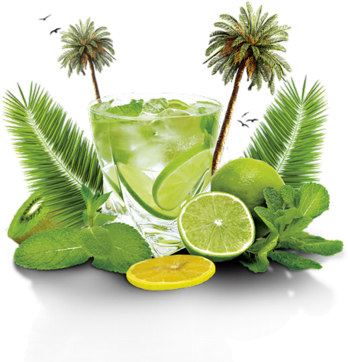

Welcome to Mojito recipe

Ceci est un test d'un programme en html avec la recette du Mojito et des possibilités que donne le langage HTML, CSS et JS
Le Mojito est un Cocktail rafraichissant à base de citron et de menthe, il peut se boire avec ou sans alcool
Tout d'abord il vous faut
- 1 Saladier
- 3 Citrons jaunes
- 3 Citrons verts
- De la Menthe (n'hésitez pas à en mettre beaucoup)
- 1 Bouteille d'eau gazeuze
- 1/2 Bouteille de sirop de canne
- De la Limonade
- Du Sucre
Donc voici la recette du Mojito
- Pressez les citrons jaunes
- Pressez les citrons verts coupe en 8
- Coupez la menthe avec vos mains (pour garder leurs saveurs)
- Ajoutez l'eau gazeuse et le Sirop de canne
- Ajoutez vos 2 cuillères à soupe de Sucre
- Enfin, ajoutez la limonade
Et voila, votre mojito est fin prêt à être déguster
Si vous voulez en savoir plus sur le Mojito cliquez sur ce lien ->
Cocktail Mojito
Fin de la recette